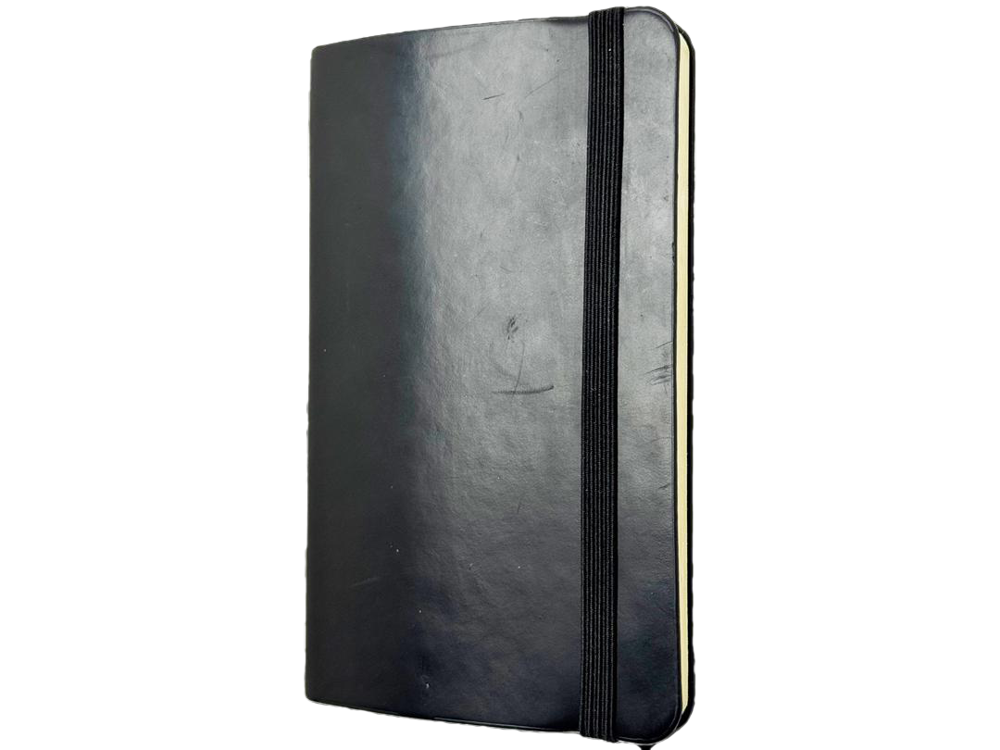

Technology Team
with Cream and Chrome
Click to Start
Loading...

1 Traces of Journeys
2 Intimacy in Hand
3 A Gentle Embrace
4 Unexpected Pen Companion
5 Lighter Than an Egg
6 Harmony of Wear
7 A Vessel of Memory
X